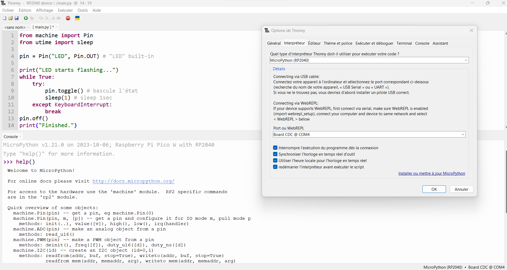
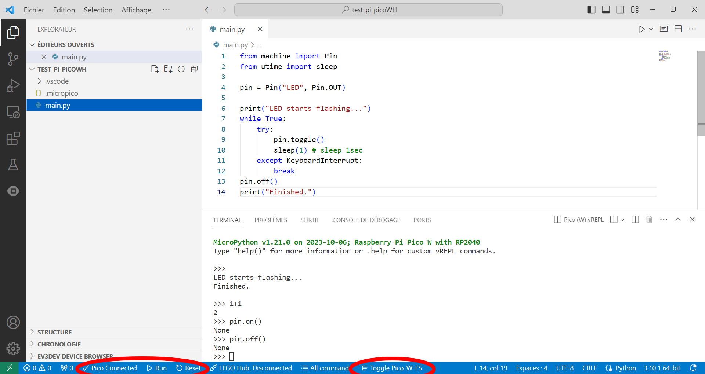
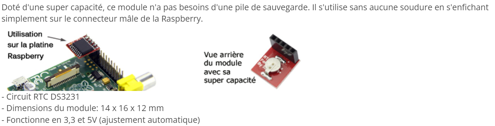
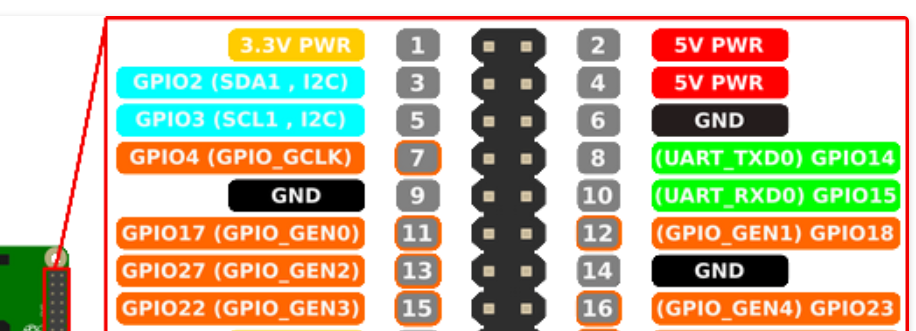

Pi Pico#
Broches Pi Pico W#

Démarrage en MicroPython#
- Télécharger le firmeware adapté au Raspberry Pi Pico W (avec Wi-Fi et Bluetooth LE) : https://micropython.org/download/rp2-pico-w/rp2-pico-w-latest.uf2
- Maintenir appuyé le bouton
BOOTtout en connectant l'USB au PC ; - Glisser/déposer le fichier du firmware sur le lecteur
RPI-RP2 (E:);

Avec Thonny#
- Démarrer le logiciel
Thonnypuis cliquer dans le menu surExécuterpour choisir le bon interpréteur et le port connecté ;

- Enregistrer en
main.pyle code suivant pour tester la LED intégrée sur la Pi Pico W :
# Blink en boucle infinie
from machine import Pin
from utime import sleep
pin = Pin("LED", Pin.OUT) # "LED" désigne la led built-in
print("LED starts flashing...")
while True:
try:
pin.toggle() # bascule d'un état à l'autre
sleep(1) # pause de 1 seconde
except KeyboardInterrupt:
break
pin.off()
print("Finished.")
Spécificité pour la LED embarquée sur la Pi Pico W cf 3.4. The on-board LED (page 16)
Faire Ctrl＋C pour provoquer une interruption clavier ou appuyer sur le bouton "stop" ;
Avec VSC#
Le plus pratique pour programmer en MicroPython une carte Pi Pico W avec Visual Studio Code est d'installer l'extension dédiée MicroPico et d'en suivre les instructions...

Extensions nécessaires#
Autres solutions#
Module picozero#
Ressources#
- MicroPython - Quick reference for the RP2
- Raspberry Pi Pico Python SDK
- Connecting to the Internet with Raspberry Pi Pico W
raspberry pi pico programmer RTC + ntp (wifi) en python
Exemples d'applications#
Callback#
# Blink avec callback
from machine import Pin, Timer
led = Pin("LED", Pin.OUT) # "LED" désigne la led built-in
timer = Timer() # Créé une instance de Timer()
def blink(timer) :
led.toggle()
timer.init(freq=2.5, mode=Timer.PERIODIC, callback=blink)
On observe que la LED clignote mais la carte reste disponible pour d'autres instructions
Real Time Clock#
Avec la classe machine.RTC de MicroPython, il est possible d'utiliser l'horloge temps réel interne du Raspberry Pi Pico afin de connaître la date et l'heure à tout instant.
Récupérer les informations de l'horloge#
# Obtenir la date et l'heure du µC
from machine import RTC
from utime import sleep
rtc = RTC() # création d'un objet de type "Real Time Clock"
while True:
t = rtc.datetime() # obtention de la date et l'heure
# Affichage au format tuple (year, month, day, weekday, hours, minutes, seconds, subseconds)
print(t)
# Affichage reformaté
jours = ["lundi", "mardi", "mercredi", "jeudi", "vendredi", "samedi", "dimanche"]
print(f"Pour le µC nous sommes maintenant le {jours[t[3]]} {t[2]}/{t[1]}/{t[0]} et il est {t[4]}h{t[5]}min{t[6]}s" )
if t[0] == 2021 :
print("(L'horloge n'est pas réglée !)")
print()
sleep(1) # mise à jour chaque seconde
Régler l'horloge#
L'horloge interne du Raspberry Pi Pico redémarre à la date du vendredi 01/01/2021 à 0h0min0s dès qu'on le réalimente.
Le script suivant permet à l'utilisateur de régler l'horloge manuellement :
# Régler la date et l'heure du µC
from machine import RTC
from utime import sleep
rtc = RTC()
print("Réglage manuel de la date et de l'heure")
annee = int(input ("Année (4 chiffres) : "))
mois = int(input ("Mois (1-12) : "))
jour = int(input("Jour (1-31) : "))
heure = int(input("Heure (0-23) : "))
minute = int(input("Minute (0-59) : "))
seconde = int(input("Seconde (0-59) : "))
# réglage de l'heure
rtc.datetime((annee, mois, jour, 0, heure, minute, seconde, 0))
while True:
t = rtc.datetime() # obtention de la date et l'heure
# Affichage au format tuple (year, month, day, weekday, hours, minutes, seconds, subseconds)
print(t)
# Affichage reformaté
jours = ["lundi", "mardi", "mercredi", "jeudi", "vendredi", "samedi", "dimanche"]
print(f"Pour le µC nous sommes maintenant le {jours[t[3]]} {t[2]}/{t[1]}/{t[0]} et il est {t[4]}h{t[5]}min{t[6]}s" )
sleep(1) # mise à jour chaque seconde
Thonny met à jour la date et l'heure du µC automatiquement...
https://electroniqueamateur.blogspot.com/2021/08/connaitre-la-date-et-lheure-avec-un.html
https://electroniqueamateur.blogspot.com/2021/08/horloge-temps-reel-ds3231-et-raspberry.html
 
https://micropython-urtc.readthedocs.io/en/latest/install.html https://github.com/adafruit/Adafruit-uRTC
Ou https://github.com/balance19/micropython_DS3231 -->
import time
from machine import Pin
from picozero import pico_led
relais_1 = Pin(18, Pin.OUT) # create output pin on GPIO18
while True :
pico_led.on()
time.sleep(1)
pico_led.off()
relais_1.on() # set pin to "on" (high) level
time.sleep(1) # sleep for 1 second
relais_1.off() # set pin to "off" (low) level
time.sleep(1) # sleep for 1 second
import time
from machine import Pin
LED = Pin("LED", Pin.OUT) # create output pin on GPIO25 the built-in LED
while True :
LED.on() # set pin to "on" (high) level
time.sleep(1) # sleep for 1 second
LED.off() # set pin to "off" (low) level
time.sleep(1) # sleep for 1 second
import time
from picozero import pico_led
while True :
pico_led.on()
time.sleep(1)
pico_led.off()
time.sleep(1)
# Serveur couronne de l'Avent
import network
import socket
from time import sleep
import machine
import codes_wlan
from picozero import pico_temp_sensor
# Gestion de l'horloge
import ntptime # Network Time Protocol
rtc = machine.RTC()
ssid = codes_wlan.ssid
password = codes_wlan.password
led = machine.Pin("LED", machine.Pin.OUT) # "LED" désigne la led built-in
relais = machine.Pin(18, machine.Pin.OUT)
def connect():
# Connexion au WLAN
wlan = network.WLAN(network.STA_IF)
wlan.active(True)
wlan.config(pm=0xa11140) # Pour augmenter la puissance du signal si besoin
wlan.connect(ssid, password)
while wlan.isconnected() == False:
print('Waiting for connection...')
sleep(1)
print(wlan.ifconfig())
ip = wlan.ifconfig()[0]
print(f"Pi Pico W connectée à l'adresse IP : {ip}")
return ip
def open_socket(ip):
# Ouvrir un socket
address = (ip, 80)
connexion = socket.socket()
connexion.bind(address)
connexion.listen(1)
return connexion
def webpage(temperature, etat_led, etat_relais):
#Template HTML
html = f"""
<!DOCTYPE html>
<html lang="fr">
<head>
<meta charset="UTF-8">
<meta name="viewport" content="width=device-width, initial-scale=1.0">
<title>Pi Pico W</title>
</head>
<body>
<form action="./led-on">
<input type="submit" value="Allumer la LED" />
</form>
<form action="./led-off">
<input type="submit" value="Eteindre la LED" />
</form>
<p>La LED est {etat_led}</p>
<form action="./relais-on">
<input type="submit" value="Allumer le relais" />
</form>
<form action="./relais-off">
<input type="submit" value="Eteindre le relais" />
</form>
<p>Le relais est {etat_relais}</p>
<p>La température est de {temperature} °C</p>
</body>
</html>
"""
return str(html)
def serveur(connexion, dt):
#Start a web server
etat_led = 'OFF'
led.off()
etat_relais = 'OFF'
relais.off()
temperature = 0
while True:
client = connexion.accept()[0]
requete = client.recv(1024)
requete = str(requete)
try:
requete = requete.split()[1]
except IndexError:
pass
if requete == '/led-on?':
led.on()
etat_led = 'ON'
elif requete =='/led-off?':
led.off()
etat_led = 'OFF'
if requete == '/relais-on?':
relais.on()
etat_relais = 'ON'
elif requete =='/relais-off?':
relais.off()
etat_relais = 'OFF'
temperature = pico_temp_sensor.temp
print(requete)
html = webpage(temperature, etat_led, etat_relais)
client.send(html)
client.close()
try:
# Connexion au WLAN
ip = connect()
# Réglage de l'horloge
ntptime.settime() # Réglage de l'horloge à l'heure UTC obtenu d'internet (protocole NTP)
t = rtc.datetime() # Tuple (year, month, day, weekday, hours, minutes, seconds, subseconds)
print(f"RTC du RP2040 à l'heure UTC : {t}")
# Réglage de l'horloge à l'heure de Paris
saison = "été" if 3<t[1]<11 else "hiver"
decalage = 2 if 3<t[1]<11 else 1 # 1h en hiver, 2h en été
dt = rtc.datetime((t[0], t[1], t[2], t[3], t[4] + decalage, t[5], t[6], t[7]))
print(f"RTC du RP2040 à l'heure d'{saison}) : {dt}")
# Démarrage du serveur
connexion = open_socket(ip)
serveur(connexion, dt)
except KeyboardInterrupt:
machine.reset()